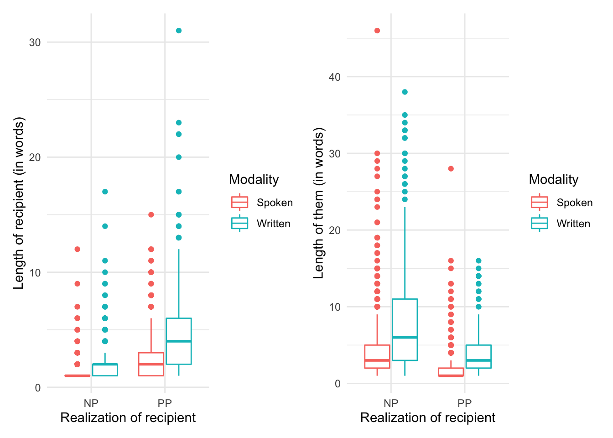
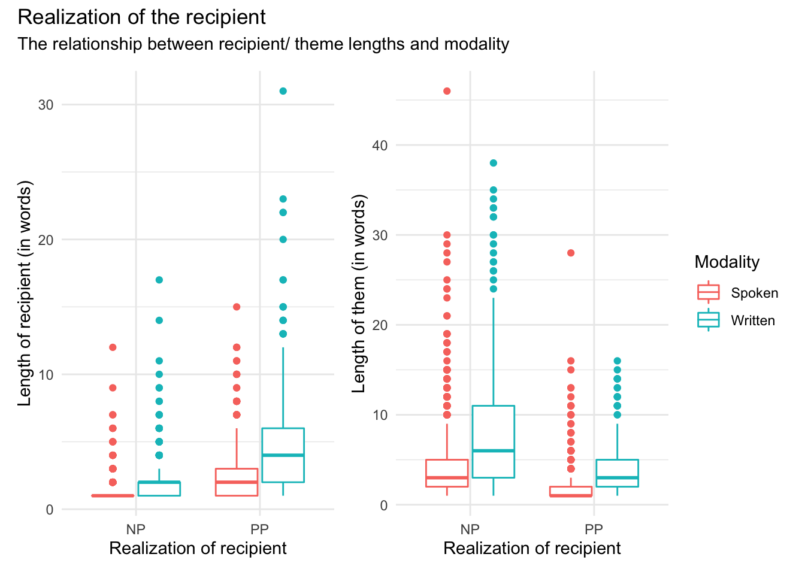

vignettes/recipe_9.Rmd
recipe_9.RmdIn this Recipe we will work with the dative dataset from the languageR package to illustrate some common coding strategies for preparing datasets for inferential data analysis, as well as the steps conduct descriptive assessment, statistical interrogation, and evaluation and reporting of results. As seen in Chapter 8 “Inference” in the Text as Data Coursebook, the dative dataset concerns the use of the Dative Alternation. In this demonstration we will posit the research hypothesis that the role (either ‘recipient’ or ‘theme’) with the longer phrase will be the ordered last in the dative construction. This is related to the syntactic phenomenon “Heavy NP” shift. To illustrate, this predicts that example (2) in A. and B. would be preferred over (1).
A. Double Object Dative
B. Prepositional Dative
To set up the dataset in a format to demonstrate these strategies, I will load the dataset and select a subset of key variables, making sure that the vectors that are encoded as factors are changed to character vectors. It is important to note that since this dataset is included as part of an R package the dataset dative is stored in an .rds file. These types of files allow for storing vectors as factors. Plain-text files such as .csv files, however, do not store data as factors. So to illustrate a common scenario for reproducible research projects in which data and datasets are stored in plain-text files, I’ve removed the factors.
Let’s load the package we will use in this Recipe now. I’ve also included a custom function print_pretty_tables() to make printing tables with captions a little simpler.
library(tidyverse) # data manipulation
library(janitor) # for `clean_names()` function
library(skimr) # descriptive summaries
library(effectsize) # calculate confidence and generate effect size
library(report) # create boilerplate statistical reporting
library(patchwork) # organize plots
library(knitr) # pretty formatted tables
print_pretty_table <- function(data, caption, n = 10) {
# Function
# Print data frames as pretty tables with captions
data %>% # dataset
slice_head(n = n) %>% # first n observations
knitr::kable(booktabs = TRUE, # bold headers
caption = caption) # caption
}Let’s take a look at the structure of our demo dataset dative.
dative <- languageR::dative %>%
select(RealizationOfRecipient, Modality, LengthOfRecipient, LengthOfTheme) %>%
mutate_if(is.factor, as.character)
glimpse(dative)## Rows: 3,263
## Columns: 4
## $ RealizationOfRecipient <chr> "NP", "NP", "NP", "NP", "NP", "NP", "NP", "NP",…
## $ Modality <chr> "written", "written", "written", "written", "wr…
## $ LengthOfRecipient <int> 1, 2, 1, 1, 2, 2, 2, 1, 1, 1, 2, 2, 1, 2, 1, 1,…
## $ LengthOfTheme <int> 14, 3, 13, 5, 3, 4, 4, 1, 11, 2, 3, 3, 5, 2, 8,…We have 3,263 observations and 4 variables.
Although the process of dataset transformation should ideally prepare a dataset for analysis, there are, at times, adjustments that need to still need to take place. These may be structural in nature, that is that the dataset requires row-wise (i.e. a change of the unit of observation) and/ or column-wise (i.e. the addition or removal of columns). There also may be changes which are less structural such as recoding character vectors to factors or even aesthetic (i.e. renaming columns or renaming values).
Working with the dative dataset, let’s first rename the columns so that they follow the ‘snake case’ convention I’ve used throughout the course. The janitor package contains a function called clean_names(). This function by default will change column names to snake case. There are two reasons to change the variable names: 1) I find snake case more legible and 2) I want to be consistent in my use of naming and formatting conventions. This second point is important so that we help ourselves avoid typos and other confusion when switching between conventions.
dative <-
dative %>% # dataset
clean_names() # convert the column names to snake case
dative %>% # dataset
print_pretty_table(caption = "First 10 observations of the `datives` dataset with snake case column names.")| realization_of_recipient | modality | length_of_recipient | length_of_theme |
|---|---|---|---|
| NP | written | 1 | 14 |
| NP | written | 2 | 3 |
| NP | written | 1 | 13 |
| NP | written | 1 | 5 |
| NP | written | 2 | 3 |
| NP | written | 2 | 4 |
| NP | written | 2 | 4 |
| NP | written | 1 | 1 |
| NP | written | 1 | 11 |
| NP | written | 1 | 2 |
Now let’s get to know the data a little better. I’ve provided a data dictionary based off of the R Documentation for this dataset in the languageR package.
| variable_name | name | description |
|---|---|---|
| realization_of_recipient | Realization of Recipient | Coding the realization of the dative as either NP or PP. |
| modality | Language Modality | Modality where the dative construction appeared; either spoken or written. |
| length_of_recipient | Length of Recipient | The number of words comprising the recipient. |
| length_of_theme | Length of Theme | The number of words comprising the theme. |
Now, the next step we need to conduct to prepare this dataset for analysis is to change the character vectors to factors. This is done by using the factor() function. Most statistical procedures in R will generate errors if character vectors are not converted to factors. So what is a factor vector? Essentially it is a character vector with additional attributes that allow for the encoding of explicit ordering of the levels (distinct values of the variable) and/ or the addition of labels (that may differ from the actual values).
In the dative dataset we have two character vectors: realization_of_recipient and modality. Now neither of these character vectors contain information which is logically ordered, so we do not have to apply level ordering to these variables. We can quickly change all the character vectors to factors using the special case of mutate() called mutate_if() which takes a name of vector type to choose and then the function to apply to this (or these) vectors. By default factor() will order the levels alpha-numerically. Let’s test this out creating a temporary object called dative_fct.
## Rows: 3,263
## Columns: 4
## $ realization_of_recipient <fct> NP, NP, NP, NP, NP, NP, NP, NP, NP, NP, NP, N…
## $ modality <fct> written, written, written, written, written, …
## $ length_of_recipient <int> 1, 2, 1, 1, 2, 2, 2, 1, 1, 1, 2, 2, 1, 2, 1, …
## $ length_of_theme <int> 14, 3, 13, 5, 3, 4, 4, 1, 11, 2, 3, 3, 5, 2, …We can use the levels() function to see what the levels of a factor are and see how they are ordered. Let’s look at the modality factor.
## [1] "spoken" "written"If we want to order them in some other fashion and/ or we want to change the labels for the levels, we can do that by mutating each variable and applying the levels = and/ or labels = arguments with a character vector of the values in the order we want them to be ordered as levels and the labels we want. In this case the level ordering does not need to be change as it is not important for our factors, but we need to make sure that when we label the values that the default ordering and our label ordering correspond. To make sure that we don’t confuse the default ordering and our addition of labels we will use both arguments. Let’s change the labels of ‘written’ to “Written” and ‘spoken’ to “Spoken” while making sure to apply these labels to the correct values.
dative <-
dative %>% # dataset
mutate(realization_of_recipient = factor(realization_of_recipient)) %>% # change to factor
mutate(modality = factor(modality,
levels = c("spoken", "written"),
labels = c("Spoken", "Written"))) # change to factor with new level labels
glimpse(dative)## Rows: 3,263
## Columns: 4
## $ realization_of_recipient <fct> NP, NP, NP, NP, NP, NP, NP, NP, NP, NP, NP, N…
## $ modality <fct> Written, Written, Written, Written, Written, …
## $ length_of_recipient <int> 1, 2, 1, 1, 2, 2, 2, 1, 1, 1, 2, 2, 1, 2, 1, …
## $ length_of_theme <int> 14, 3, 13, 5, 3, 4, 4, 1, 11, 2, 3, 3, 5, 2, …We are now ready to move on to analyze this dataset!
In our descriptive assessment we are going to want to take a look at the numeric summaries and generate relevant plots to explore the distribution of the variables to be used in our statistical model. To get numerical summaries we can use the function skim() from the skimr() package.
| Name | Piped data |
| Number of rows | 3263 |
| Number of columns | 4 |
| _______________________ | |
| Column type frequency: | |
| factor | 2 |
| numeric | 2 |
| ________________________ | |
| Group variables | None |
Variable type: factor
| skim_variable | n_missing | complete_rate | ordered | n_unique | top_counts |
|---|---|---|---|---|---|
| realization_of_recipient | 0 | 1 | FALSE | 2 | NP: 2414, PP: 849 |
| modality | 0 | 1 | FALSE | 2 | Spo: 2360, Wri: 903 |
Variable type: numeric
| skim_variable | n_missing | complete_rate | mean | sd | p0 | p25 | p50 | p75 | p100 | hist |
|---|---|---|---|---|---|---|---|---|---|---|
| length_of_recipient | 0 | 1 | 1.84 | 2.07 | 1 | 1 | 1 | 2 | 31 | ▇▁▁▁▁ |
| length_of_theme | 0 | 1 | 4.27 | 4.36 | 1 | 2 | 3 | 5 | 46 | ▇▁▁▁▁ |
We can see that the skim() function outputs quite a bit of information about our dataset. The information in the ‘Data Summary,’ however, is information we already gain when we use the glimpse() function so it is often not needed. We can use the yank() function to select the variable type that we would like to look at –those are either ‘factor’ or ‘numeric.’ So let’s see how we ‘yank’ the factors realization_of_recipient and modality first with yank("factor") after skim().
dative %>% # dataset
skim() %>% # get data summary
yank("factor") # only show factor-oriented informationVariable type: factor
| skim_variable | n_missing | complete_rate | ordered | n_unique | top_counts |
|---|---|---|---|---|---|
| realization_of_recipient | 0 | 1 | FALSE | 2 | NP: 2414, PP: 849 |
| modality | 0 | 1 | FALSE | 2 | Spo: 2360, Wri: 903 |
Great. Now if we want to get just the ‘numeric’ variables, we can just run yank("numeric") with the same basic approach. There is, however, a useful way to modify what information skim() returns. This can be particularly useful for numeric variables so tha we can get the IQR score. To do this we can create our own ‘skim’ object with the skim_with() function. We can then define new summary statistics to return within the sfl() (‘skim function list’) function. Here I will add the IQR() function from R to the column name irq. I will name this custom skim function num_skim() as it is applicable only to numeric variables.
num_skim <- skim_with(numeric = sfl(iqr = IQR)) # add IQR to custom skim
dative %>%
num_skim() %>% # get custom data summary
yank("numeric") # only show numeric-oriented informationVariable type: numeric
| skim_variable | n_missing | complete_rate | mean | sd | p0 | p25 | p50 | p75 | p100 | hist | iqr |
|---|---|---|---|---|---|---|---|---|---|---|---|
| length_of_recipient | 0 | 1 | 1.84 | 2.07 | 1 | 1 | 1 | 2 | 31 | ▇▁▁▁▁ | 1 |
| length_of_theme | 0 | 1 | 4.27 | 4.36 | 1 | 2 | 3 | 5 | 46 | ▇▁▁▁▁ | 3 |
We can also use skim() or our custom skim num_skim() after we group our data frame. This has the effect of creating aggregated numeric summaries.
dative %>%
group_by(realization_of_recipient, modality) %>% # group by categorical variables
num_skim() %>% # get custom data summary
yank("numeric") # only show numeric-oriented informationVariable type: numeric
| skim_variable | realization_of_recipient | modality | n_missing | complete_rate | mean | sd | p0 | p25 | p50 | p75 | p100 | hist | iqr |
|---|---|---|---|---|---|---|---|---|---|---|---|---|---|
| length_of_recipient | NP | Spoken | 0 | 1 | 1.14 | 0.60 | 1 | 1 | 1 | 1 | 12 | ▇▁▁▁▁ | 0 |
| length_of_recipient | NP | Written | 0 | 1 | 1.95 | 1.59 | 1 | 1 | 2 | 2 | 17 | ▇▁▁▁▁ | 1 |
| length_of_recipient | PP | Spoken | 0 | 1 | 2.30 | 2.04 | 1 | 1 | 2 | 3 | 15 | ▇▁▁▁▁ | 2 |
| length_of_recipient | PP | Written | 0 | 1 | 4.75 | 4.10 | 1 | 2 | 4 | 6 | 31 | ▇▂▁▁▁ | 4 |
| length_of_theme | NP | Spoken | 0 | 1 | 3.82 | 3.55 | 1 | 2 | 3 | 5 | 46 | ▇▁▁▁▁ | 3 |
| length_of_theme | NP | Written | 0 | 1 | 7.88 | 6.45 | 1 | 3 | 6 | 11 | 38 | ▇▂▁▁▁ | 8 |
| length_of_theme | PP | Spoken | 0 | 1 | 2.26 | 2.45 | 1 | 1 | 1 | 2 | 28 | ▇▁▁▁▁ | 1 |
| length_of_theme | PP | Written | 0 | 1 | 3.82 | 2.82 | 1 | 2 | 3 | 5 | 16 | ▇▃▁▁▁ | 3 |
Since we have quite a few variables, the output can be a little hard to visually parse. A couple things to note. First, we can see in general the median for each of our aggregated summaries is smaller than the mean –which means that we have right skew. Second, if we look at the means or the medians we can see that these central tendency measures suggest that the length of the recipient/ theme is longer for both spoken and written modalities when the recipient is last (i.e. realization of the recipient is ‘PP’) or the theme is last (‘NP’).
Let’s visualize these metrics. Given that we have two categorical variables (one of which is the dependent) and two continuous variables, I will choose a box plot. The twist is that we will need to create two box plots one for each continuous variable. To display them side-by-side we assign the plots to objects (p1 and p2) and then since we have loaded the patchwork package we can simply return these two plot objects combining them with the + operator.
p1 <-
dative %>% # dataset
ggplot(aes(x = realization_of_recipient, y = length_of_recipient, color = modality)) + # mappings
geom_boxplot() + # box plot
labs(x = "Realization of recipient", y = "Length of recipient (in words)", color = "Modality") # labels
p2 <-
dative %>% # dataset
ggplot(aes(x = realization_of_recipient, y = length_of_theme, color = modality)) + # mappings
geom_boxplot() + # boxplot
labs(x = "Realization of recipient", y = "Length of them (in words)", color = "Modality") # labels
p1 + p2
Now this plot looks fine, but we can tweak it to remove the legend (“Modality”) from the left-pane plot (p1) so that it does not appear twice and fill up space in the plotting space. We can change the underlying theme for p1 with the theme() layer function and set the argument legend.position = to "none". We can add the theme change in one of two ways. The first is just to add theme(legend.position = "none") to the list of layer features that create the p1 plot or second we can modify the p1 object after it’s been created by calling p1 and then applying the change and sending the results to a new object (which can have the same name to overwrite the previous plot object p1). Let’s take the second approach for demonstration purposes.
I also want to show how you can create annotations with patchwork to add a general plot title and subtitle to the whole plotting space. We use the plot_annotation() function after combining p1 and p2.
p1 <-
dative %>% # dataset
ggplot(aes(x = realization_of_recipient, y = length_of_recipient, color = modality)) + # mappings
geom_boxplot() + # box plot
labs(x = "Realization of recipient", y = "Length of recipient (in words)", color = "Modality") # labels
p1 <- p1 + theme(legend.position = "none") # remove legend from left plot
p2 <-
dative %>% # dataset
ggplot(aes(x = realization_of_recipient, y = length_of_theme, color = modality)) + # mappings
geom_boxplot() + # boxplot
labs(x = "Realization of recipient", y = "Length of them (in words)", color = "Modality") # labels
p1 + p2 + plot_annotation(title = "Realization of the recipient",
subtitle = "The relationship between recipient/ theme lengths and modality")
Now let’s interpret this visualization. It appears that our prediction has some support. The the length of the recipient is longer when the dative is realized as a ‘PP’ (left pane) and the length of the theme is longer when the recipient is realized as ‘NP’ (right pane). We also see that there appears to be an trend for written language to have longer themes and recipients overall. With these intuitions in mind let’s now look to submit our data to a statistical test.
Since our dependent variable realization_of_recipient is categorical with exactly two levels (‘NP’ and ‘PP’) and we are considering two main effects (length_of_recipient and length_of_theme) we will turn to a regression model. For a two-level categorical dependent variable we will use logistic regression which is a type of Generalized Linear Model. The glm() function will provide us the mechanism to run this test. We only need to make sure to specify the formula for our analysis and the family of the distribution. The formula will be realization_of_recipient ~ length_of_recipient + length_of_theme + modality. Now we’ve included modality in our model here as a control variable. That is we will not aim to interpret modality as an effect but we include it in the model so that it can account for some amount of variability in the realization_of_recipient that would otherwise be left unaccounted for. Control variables are often variables which are known to play a part in the relationship, but are not part of the hypothesis to be tested.
m1 <- glm(formula = realization_of_recipient ~ length_of_recipient + length_of_theme + modality, # formula
data = dative, # dataset
family = "binomial") # distribution family
summary(m1) # preview statistical results##
## Call:
## glm(formula = realization_of_recipient ~ length_of_recipient +
## length_of_theme + modality, family = "binomial", data = dative)
##
## Deviance Residuals:
## Min 1Q Median 3Q Max
## -4.136 -0.658 -0.497 0.065 4.322
##
## Coefficients:
## Estimate Std. Error z value Pr(>|z|)
## (Intercept) -1.5909 0.0917 -17.35 < 2e-16 ***
## length_of_recipient 0.7792 0.0457 17.06 < 2e-16 ***
## length_of_theme -0.3046 0.0231 -13.21 < 2e-16 ***
## modalityWritten 0.5555 0.1174 4.73 2.2e-06 ***
## ---
## Signif. codes: 0 '***' 0.001 '**' 0.01 '*' 0.05 '.' 0.1 ' ' 1
##
## (Dispersion parameter for binomial family taken to be 1)
##
## Null deviance: 3741.1 on 3262 degrees of freedom
## Residual deviance: 2816.0 on 3259 degrees of freedom
## AIC: 2824
##
## Number of Fisher Scoring iterations: 6Looking at the ‘Coefficients’ sub-table, we can see that both our main effects are found to be significant (the Significance codes are a helpful guide). Since we know the nature of the trends from our prior numeric and visual assessments, we can readily interpret the meaning of these results. In effect our hypothesis is found to be significant.
But before we continue, we should verify the effect sizes and the reliability of the test statistic with a confidence interval. We can use the effectsize() function from the effectsize package for this purpose.
effects <- effectsize(m1) # get test statistics and confidence intervals
effects # preview test statistic and confidence interval| Parameter | Std_Coefficient | CI | CI_low | CI_high |
|---|---|---|---|---|
| (Intercept) | -1.457 | 0.95 | -1.597 | -1.320 |
| length_of_recipient | 1.611 | 0.95 | 1.431 | 1.801 |
| length_of_theme | -1.328 | 0.95 | -1.530 | -1.136 |
| modalityWritten | 0.555 | 0.95 | 0.324 | 0.785 |
The effects object is a data frame which we can then use to pass the relevant coefficient to the interpret_r() function to provide an interpretation of the strength of the effect.
interpret_r(effects$Std_Coefficient[2]) # length of recipient## [1] "very large"
## (Rules: funder2019)
interpret_r(effects$Std_Coefficient[3]) # length of theme## [1] "very large"
## (Rules: funder2019)Reporting results in study write-ups is an important final step to communicating the findings. The report package is a very helpful function which will automatically create a boilerplate set of reports for including in your paper. The function report_text() is used on the model output, in our case m1.
report_text(m1)We fitted a logistic model (estimated using ML) to predict realization_of_recipient with length_of_recipient, length_of_theme and modality (formula: realization_of_recipient ~ length_of_recipient + length_of_theme + modality). The model's explanatory power is substantial (Tjur's R2 = 0.30). The model's intercept, corresponding to length_of_recipient = 0, length_of_theme = 0 and modality = Spoken, is at -1.59 (95% CI [-1.77, -1.41], p < .001). Within this model:
- The effect of length of recipient is statistically significant and positive (beta = 0.78, 95% CI [0.69, 0.87], p < .001; Std. beta = 1.61, 95% CI [1.43, 1.80])
- The effect of length of theme is statistically significant and negative (beta = -0.30, 95% CI [-0.35, -0.26], p < .001; Std. beta = -1.33, 95% CI [-1.53, -1.14])
- The effect of modality [Written] is statistically significant and positive (beta = 0.56, 95% CI [0.32, 0.78], p < .001; Std. beta = 0.56, 95% CI [0.32, 0.78])
Standardized parameters were obtained by fitting the model on a standardized version of the dataset. 95% Confidence Intervals (CIs) and p-values were computed using The report package allows us to pull out pieces of this information as we want as well. But for most purposes the above output is a great start for a write up. You may, however, want to include a table of the report statistics. We can use the report_table() function to provide this table.
report_table(m1) # get the report statistics table| Parameter | Coefficient | CI | CI_low | CI_high | z | p | Std_Coefficient | Std_Coefficient_CI_low | Std_Coefficient_CI_high | Fit | |
|---|---|---|---|---|---|---|---|---|---|---|---|
| 1 | (Intercept) | -1.591 | 0.95 | -1.772 | -1.413 | -17.35 | 0 | -1.457 | -1.597 | -1.320 | NA |
| 2 | length of recipient | 0.779 | 0.95 | 0.692 | 0.871 | 17.06 | 0 | 1.611 | 1.431 | 1.801 | NA |
| 3 | length of theme | -0.305 | 0.95 | -0.351 | -0.261 | -13.21 | 0 | -1.328 | -1.530 | -1.136 | NA |
| 4 | modality [Written] | 0.555 | 0.95 | 0.324 | 0.785 | 4.73 | 0 | 0.555 | 0.324 | 0.785 | NA |
| 5 | NA | NA | NA | NA | NA | NA | NA | NA | NA | NA | NA |
| 6 | AIC | NA | NA | NA | NA | NA | NA | NA | NA | NA | 2824.039 |
| 7 | BIC | NA | NA | NA | NA | NA | NA | NA | NA | NA | 2848.401 |
| 8 | Tjur’s R2 | NA | NA | NA | NA | NA | NA | NA | NA | NA | 0.296 |
| 10 | Sigma | NA | NA | NA | NA | NA | NA | NA | NA | NA | 0.930 |
| 11 | Log_loss | NA | NA | NA | NA | NA | NA | NA | NA | NA | 0.432 |